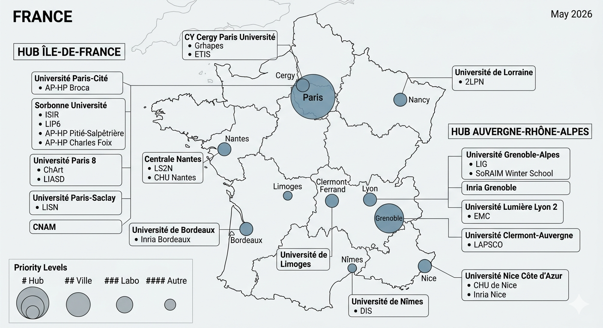

🗺️ Interactive Map of Gerontological Social Robotics in France 🗺️ Cartographie Interactive de la Robotique Sociale Gérontologique en France

I. Researchers & Teams in Gerontological Social Robotics I. Chercheurs & Équipes en Robotique Sociale Gérontologique
Grhapes / INSEI — CY Cergy Paris Université
Robotic mediations, Robot-Extension paradigmMédiations robotiques, paradigme Robot-Extension
PU
PhD CandidateDoctorant
Broca Living Lab — Université Paris Cité / AP-HP
Cognitive psychology orientationOrientation psychologie cognitive
PU-PH
MCF
Dr. (Thèse 2026)
Dr. (Thèse 2019)
Cyberpsychologie - Université Paris-Cité
Psychodynamic / psychoanalytic orientationOrientation psychodynamique / psychanalyse
Psychologue
Psychiatre & Psychologue
ISIR — Sorbonne Université / CNRS
Interactive & autonomous robotics, human interactionRobotique interactive et autonome, interaction humaine
PU
ETIS — CY Cergy Paris Université
Human-robot interaction modelling, emotions, embodied cognitionModélisation IHR, émotions, cognition incarnée
PU
Doctorant
Inria Grenoble - Université Grenoble Alpes
Audio-visual processing, social dialogue, robot navigation Traitement audiovisuel, dialogue social, navigation robotique
CR Inria
LIG — Université Grenoble-Alpes
Conversational robots, affective signal, speech, dialogueRobots conversationnels, signal affectif, parole, dialogue
CR CNRS
PU
LISN — Paris-Saclay
AI, éthique robotique, TAL, affect computationnel
PU
LS2N — Centrale Nantes
Rob'Autisme, CHU Nantes
Dr., Co-fondateur HUTECH
LAPSCO — Université Clermont-Auvergne / CNRS
Social cognitive psychology. Robotic co-presence effectsPsychologie sociale cognitive. Effets de la co-présence robotique
MCF
DRCE CNRS
Inria Bordeaux - Université de Bordeaux
Autonomous learning & robotic remediationApprentissage autonome & remédiation robotique
PU
Dr. (Thèse 2026)
EMC — Université Lumière Lyon 2
Cognitive Sciences & NeuropsychologySciences Cognitives & Neuropsychologie
PU
IM2A — AP-HP Pitié-Salpêtrière / Sorbonne Université
Memory and Alzheimer's Clinical ResearchRecherche clinique sur la mémoire et Alzheimer
PU-PH
AP-HP Charles Foix / Sorbonne Université
NeurogeriatricsNeurogériatrie
PU-PH
Inria Nice / CHU Nice - Université Côte d'Azur
Cognition, Behavior & TechnologyCognition, comportement et technologie
PU-PH
DR Inria
CHArt — Université Paris 8
Human and Artificial CognitionCognition Humaine et Artificielle
MCF
Université de Limoges
Robots in healthcare mediationRobots en médiation de santé
Dr., Co-fondateur HUTECH
DIS — Université de Nîmes
Design and Social InnovationDesign et Innovation Sociale
Dr.
🌟 SPRING H2020 : ARI robot deployed at Hôpital Broca. Collaboration between 8 partners.Robot ARI déployé à l'Hôpital Broca. Collaboration entre 8 partenaires.
💡 SoRAIM Winter School : International winter school on social robotics.École d'hiver internationale sur la robotique sociale.
II. Laboratories II. Laboratoires
| NameNom | University / OrganisationUniversité / Organisme | OrientationOrientation |
|---|---|---|
| Grhapes | CY Cergy Paris Université | Robotic mediations, Robot-ExtensionMédiations robotiques, Robot-Extension |
| ETIS | CY Cergy Paris Université | Neurocybernetics, robotic emotionsNeurocybernétique, émotions robotiques |
| ISIR | Sorbonne Université / CNRS | Intelligent robotics, human interactionRobotique intelligente, interaction humaine |
| CHArt | Université Paris 8 | Human and Artificial CognitionCognition Humaine et Artificielle |
| LIG | Université Grenoble Alpes | Conversational robots, affective AIRobots conversationnels, IA affective |
| LS2N | Centrale Nantes | Robotics, therapeutic mediationRobotique, médiation thérapeutique |
| DIS | Université de Nîmes | Design & Social InnovationDeisgn & Innovation Sociale |
| LISN | Université Paris-Saclay | AI, robotic ethics, NLPéthique robotique, TAL |
| LAPSCO | Université Clermont-Auvergne / CNRS | Social psychology, humanoid roboticsPsychologie sociale, robotique humanoïde |
| Inria Grenoble | Université Grenoble-Alpes | Audio-visual perception, dialoguePerception audiovisuelle, dialogue |
| Inria Bordeaux | Université de Bordeaux | Autonomous learning, cognition, HRIApprentissage autonome, cognition, IHR |
| EMC | Université Lumière Lyon 2 | Clinical neuropsychology, memory, emotionNeuropsychologie clinique, mémoire, émotion |
| LPNC | Université Grenoble Alpes / CNRS | Psychology and NeuroCognitionPsychologie et NeuroCognition |
| IM2A | AP-HP Pitié-Salpêtrière | Memory unit & AD (clinical)Unité mémoire & MA (unité clinique) |
| Broca Living Lab | AP-HP Pitié Salpêtrière / Université Paris Cité | Geriatrics, social robotics, NPIsGériatrie, robotique sociale, INM |
| Inria Nice | Université Côte d'Azur | Technology, cognition, behaviour, knowledgeCognition, comportement, technologie, connaissance |
| ILVV | CNRS, INSERM, CNAV, INED, … | Institute of Longevity, AgeingInstitut de la Longévité, Vieillesses & Vieillissement |
III. Conferences III. Conférences
| NameNom | OrganiserOrganisateur | Usual periodPériode habituelle |
|---|---|---|
| HRI – ACM/IEEE International Conference on Human-Robot Interaction | ACM / IEEE | MarchMars |
| RO-MAN – Robot and Human Interactive Communication | IEEE | August–SeptemberAoût–Septembre |
| ICDL – International Conference on Development and Learning | IEEE | AutumnAutomne |
| ICSR – International Conference on Social Robotics | Springer | NovemberNovembre |
| CHI – ACM Conference on Human Factors in Computing Systems | ACM SIGCHI | April–May (CHI 2026: Yokohama) |
| IHM – Conférence francophone sur l'Interaction Homme-Machine | AFIHM | AutumnAutomne |
| INTERACT – IFIP Conference on Human-Computer Interaction | IFIP TC13 | August–September (biennial)Août–Septembre (biennal) |
| UIST – User Interface Software and Technology | ACM | OctoberOctobre |
| JASFGG – Journées Annuelles de la SFGG | SFGG | November — JASFGG 2026: 23–25 Nov., Paris CNIT |
| JNLF – Journées de Neurologie de Langue Française | JNLF | SpringPrintemps |
| INS – International Neuropsychological Society | INS | February (INS 2026: Philadelphia) |
| EUGMS – European Geriatric Medicine Society Congress | EUGMS | September (2026: Lille) |
| AAIC – Alzheimer's Association International Conference | AAIC | JulyJuillet |
| Alzheimer Europe Conference | Alzheimer Europe | AutumnAutomne |
| SNLF – Société de Neuropsychologie de Langue Française | SNLF | AutumnAutomne |
IV. Journals & Reviews IV. Journaux & Revues
| NameNom | PublisherÉditeur | NotesNotes |
|---|---|---|
| International Journal of Social Robotics (IJSR) | Springer | Main journalRevue principale |
| J. Human-Robot Interaction (JHRI) | ACM | Open access |
| ACM Transactions on Human-Robot Interaction | ACM | — |
| IEEE Transactions on Human-Machine Systems | IEEE | — |
| IEEE Robotics & Automation Magazine | IEEE | Technology watchVeille technologique |
| Interaction Studies | John Benjamins | Reference in cognitive sciences & interactionRéférence en sciences cognitives & interaction |
| NPG – Neurologie, Psychiatrie, Gériatrie | Elsevier-Masson | French reference (brain ageing)Revue française de référence (vieillissement cérébral) |
| GPNV – Gériatrie & Psychologie Neuropsychiatrie du Vieillissement | JLE | Indexed francophone journal (SFGG)Revue francophone indexée, publiée par la SFGG |
| Journal of Alzheimer's Disease (JAD) | IOS Press | International AD referenceRéférence internationale MA |
| Alzheimer's & Dementia | Wiley / Alzheimer's Assoc. | Flagship journal (AAIC) |
| Frontiers in Aging Neuroscience | Frontiers | Open Access |
| BMC Geriatrics | BioMed Central | Open Access |
| JAMDA | Elsevier | Journal of the American Medical Directors Association |
| Gerontechnology | ISG | — |
| Revue de Neuropsychologie | JLE | French clinical neuropsychologyRevue francophone de neuropsychologie clinique |
| JournalRevue | PublisherÉditeur |
|---|---|
| JMIR Human Factors | JMIR Publications |
| JMIR Mental Health | JMIR Publications |
| Journal of Medical Internet Research (JMIR) | JMIR Publications |
| BMJ Open | BMJ |
| International Journal of Human-Computer Interaction | Taylor & Francis |
| Assistive Technology | Taylor & Francis |
| Journal of Rehabilitation and Assistive Technologies Engineering | SAGE |
V. European Projects & Key Research Programmes V. Projets Européens & Programmes de Recherche Clés
Robot-Extension paradigm, nursing homes, AD/related disorders. PI: Quentin Gaie, supervised by PU Sophie Sakka & PU Hanna Chainay.Paradigme Robot-Extension, EHPAD, MA/MA. PI : Quentin Gaie, sous la direction de PU Sophie Sakka & PU Hanna Chainay.
Socially Pertinent Robots for Gerontological Healthcare. ARI robot (PAL Robotics) deployed at Hôpital Broca geriatric day hospital.Socially Pertinent Robots for Gerontological Healthcare. Robot ARI (PAL Robotics) déployé à l'hôpital Broca gériatrique de jour.
Managing Active and healthy aging with caRing servIce rObots. Companion robot for dementia.Managing Active and healthy aging with caRing servIce rObots. Robot compagnon et démence.
Virtual coach and robotics, ethical issues (Broca Living Lab).Coach virtuel et robotique, enjeux éthiques (Broca Living Lab).
VI. Resources & Key Funders VI. Ressources & Financeurs Clés
| ResourceRessource | URL | UseUtilité |
|---|---|---|
| IEEE Xplore — Social Robots in Alzheimer | ieeexplore.ieee.org ↗ | Technical & SHS databaseBase de données techniques & SHS |
| GDR Robotique | gdr-robotique.org ↗ | French robotics research group (CNRS)Groupement De Recherche robotique français (CNRS) |
| AFIHM | afihm.org ↗ | Reference for French HCI conferencesRéférence pour conférences francophones IHM |
| PubMed / NCBI | ncbi.nlm.nih.gov ↗ | International medical bibliographyBibliographie médicale internationale |
| HAL Science | hal.science ↗ | French national open archiveArchive ouverte nationale française |
| ScanR | scanr.enseignementsup-recherche.gouv.fr ↗ | Directory of French public research structuresRépertoire des structures de recherche publiques FR |
| WikiCFP | wikicfp.com ↗ | Centralises calls for papersCentralise les appels à communications |
| InstitutionInstitution | MissionMission | LinkLien |
|---|---|---|
| Fondation Médéric Alzheimer | Annual NPI project calls; NPI guide 2024Appels à projets INM annuels ; guide INM 2024 | fondation-mederic-alzheimer.org ↗ |
| France Alzheimer | Research support, funded projectsSoutien à la recherche, projets financés | francealzheimer.org ↗ |
| Fondation Alzheimer | 1st non-governmental French research funder1er financeur non-gouvernemental de la recherche FR | fondation-alzheimer.org ↗ |
| ILVV | Institute of Longevity, AgeingInstitut de la Longévité, Vieillesses et Vieillissement | ilvv.fr ↗ |
| SFGG | French Society of Geriatrics and GerontologySociété Française de Gériatrie et Gérontologie | sfgg.org ↗ |
| ANR | National Research Agency — main public research funderAgence Nationale de la Recherche — financeur principal de la recherche publique | anr.fr ↗ |